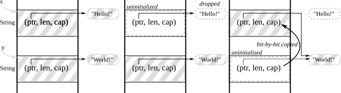

Hello, Rust!

Taesoo Kim
Taesoo Kim
Will Rust be adopted by the biggest producers of systems software (Microsoft, Apple, Green Hills Software) and/or open-sourced systems software (Linux, FreeBSD)? What are some hurdles?
ofstream, lock_guard)ofstream is freed, it reclaims the file back to OS
malloc()/free() interfaces
→ Memory management can be done statically at compilation time!
Ref. Substructural Type Systems (aka, Linear, Affine type systems)
This error occurs when an attempt is made to reassign an
immutable variable. For example:
fn main() {
let x = 3;
x = 5; // error, reassignment of immutable variable
}
By default, variables in Rust are immutable. To fix this error,
add the keyword `mut` after the keyword `let` when declaring the
variable. For example:
fn main() {
let mut x = 3;
x = 5;
}
x: i32 is initialized with 1: i32 (not valid syntax)x: i32 is assigned with 2: i32 (not valid syntax)i32 of a variable and i32 of the value should be matched!
drop() frees the memory that the variable is in charge of
→ With modern type system, abstractions, build system, package managers, etc.
unsafe code in early labs→ We will try hard to distinguish what’s safe and unsafe in each labs